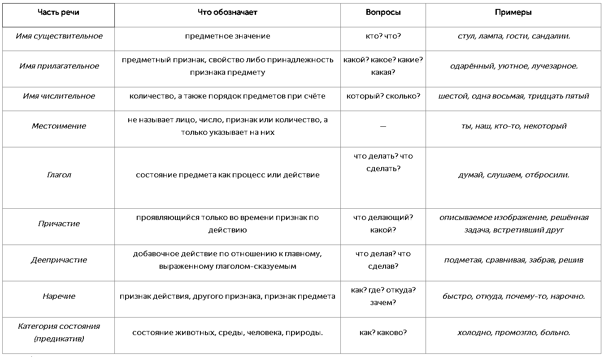
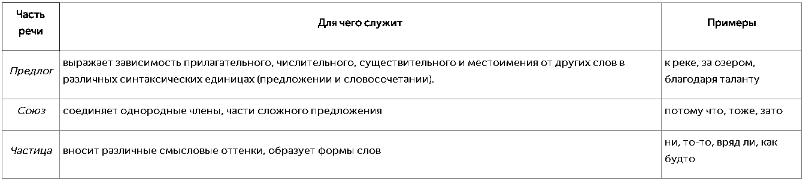
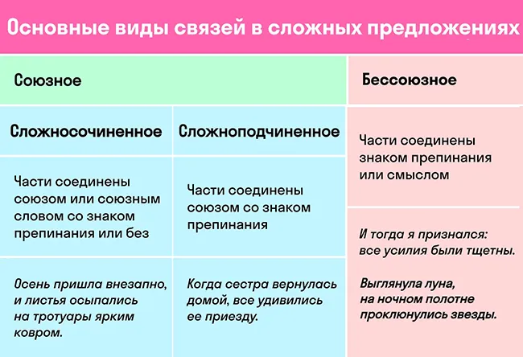
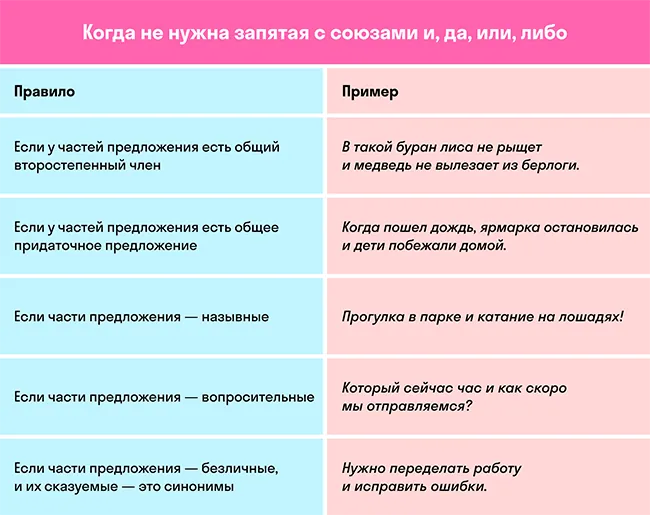
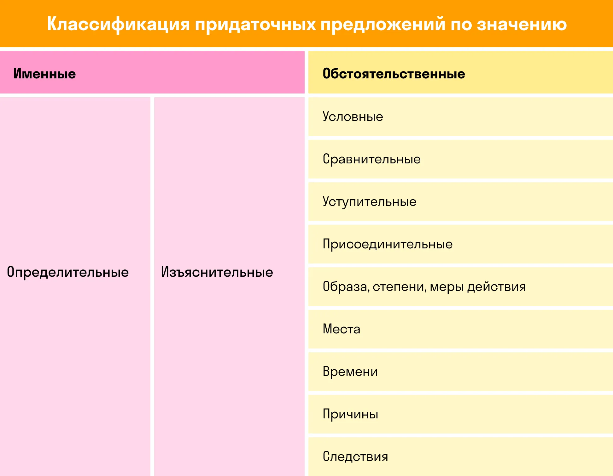

Самостоятельными они называются по той причине, что наделены лексическим значением, могут употребляться отдельно друг от друга, быть членом предложения.
Служебные части речи не обладают лексическим значением, не являются наименованием каких-либо качеств, действий, свойств. Их ещё называют незнаменательными. Эти части речи служат для выражения отношений между объектами действительности (знаменательными словами) и явлениями. Употребляются только вместе с ними, членами предложения являться не могут и не изменяются.
Причастный оборот – это причастие с зависимыми словами, которое в предложении выполняет функцию определения и отвечает на вопросы: какой? какая? какое? какие? Причастные обороты позволяют уточнять и дополнять основную информацию о предмете или явлении.
Постановка запятых зависит от позиции причастного оборота относительно определяемого слова.
Причастный оборот может:
находиться после определяемого слова;
находиться перед определяемым словом.
1.Причастный оборот после определяемого слова. Если причастный оборот стоит после определяемого слова, он всегда выделяется запятыми.
2.Причастный оборот перед определяемым словом. Если причастный оборот стоит перед определяемым словом, запятые не ставятся.
3.Причастный оборот с общим элементом в предложении. Если в предложении есть общий элемент (обстоятельство или вводное слово), причастный оборот не выделяется запятыми.
4.Обособление оборота в сложных конструкциях. Если причастный оборот выполняет роль уточнения или добавления, он выделяется запятыми независимо от положения.
Деепричастный оборот — это деепричастие с зависимыми от него словами. Вопрос к деепричастному обороту задаётся от определяемого слова, выраженного глаголом-сказуемым. В предложении деепричастный оборот выполняет роль обстоятельства.
1. Между двумя деепричастными оборотами, связанными союзом и.
2. Если деепричастный оборот стоит после союза а (при других союзах — ставится).
3. Если деепричастный оборот — фразеологическое сочетание.
Сложное предложение — это предложение, которое состоит из двух и более грамматических основ.
Сложносочиненным (ССП) называют сложное предложение, имеющее два и более независимых простых предложений в составе. Это значит, что их можно разбить точкой, при этом смысл не потеряется.
Сложноподчиненное предложение (СПП) — это вид сложного предложения, в составе которого одно простое предложение по смыслу и интонации подчиняется другому. В этом случае зависимое предложение называется придаточным, а независимое — главным.

Во многих словах русского языка «ь» пишется после шипящих согласных не для смягчения их. Ведь согласные «щ», «ч» не нуждаются в этом, так как являются непарными мягкими согласными. А согласные, обозначенные буквами «ж», «ш», напротив, всегда твердые. Значит, мягкий знак, который пишется после шипящих согласных, является морфологическим знаком, то есть маркером для обозначения существительных женского рода третьего склонения. В русском языке в форме именительного и винительного падежа существительные женского рода обязательно пишутся с мягким знаком после шипящих
В приставках гласные и согласные пишутся одинаково.
Согласно этому правилу независимо от произношения в словах пишутся приставки:
в-, за-, на-, над-, до-, о-, об-, от, под-, пред-, с-, по-, про-, недо-, пере-.
Согласно орфографическому правилу русского языка буква «з» на конце приставок пишется тогда, когда корень слова начинается с буквы, обозначающей тоже звонкий согласный звук
В словах с корнями гар-/гор-, клан-/клон-, твар-/твор-, зар-/зор-, плав-/плов- достаточно поставить ударение, чтобы выяснить, какую букву, «а» или «о», выбрать согласно правилу.
В безударном положении в словах с корнем гар-/гор-, клан-/клон, твар-/твор- пишется буква «о».
Исключение:выгарки, изгарь, пригарь
В корне зар-/зор- без ударения пишется буква «а»
Исключение:зоревать
В корне кас-/кос- пишется буква «о», если за ним находится буква «н». В остальных случаях в корне пишется буква «а»
Исключение:полог
В корне скак-/скоч- буква «а» пишется перед согласным «к», а «о» — перед «ч».
Исключение:отрасль, росток, ростовщик, Ростов, Ростислав, на вырост.
В корнях бер-/бир-, дер-/дир-, мер-/мир-, пер-/пир-, тер-/тир-, блест-/блист-, жег-/жиг-, стел-/стил-, чет-/чит- пишется буква «и», если после корня следует суффикс -а-. В остальных случаях пишется буква «е».
В слове пишется суффикс -ек, если при склонении существительного гласная «е» выпадает.
Суффикс -ич-к- пишется у слов, образованных от существительных на -иц-.
В русском языке слова, принадлежащие к любой части речи, с полу- пишутся всегда слитно
Отрицательные местоимения с «не» и «ни» пишутся слитно.
Слитно пишутся с «не» действительные причастия в полной форме, образованные от глаголов, не употребляющихся без не-.
В суффиксах кратких форм страдательных причастий прошедшего времени пишется одна буква «н».
В суффиксах кратких форм прилагательных пишется столько букв «н», сколько в полных формах.
«Не» с деепричастиями пишется раздельно
В наречии пишется столько букв «н», сколько пишется в производящем прилагательном.